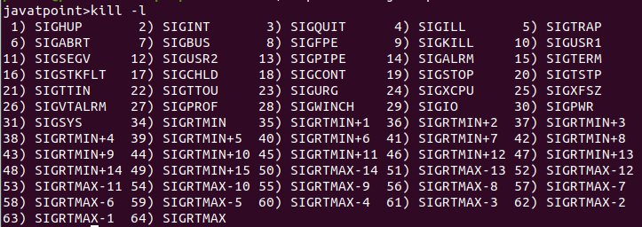

Chapter 5: Signals
Overview
This chapter introduces signals, a fundamental mechanism in Unix-based operating systems for inter-process communication (IPC) and asynchronous event handling. Signals are software interrupts delivered to a process to notify it of events such as exceptions, user input, or explicit inter-process messages.
Key topics covered in this chapter include:
- What signals are and how they work
- Common standard signals
- Sending and receiving signals
- Signal handlers and default actions
- Blocking, ignoring, and handling signals
- Practical examples and best practices
What Are Signals?
A signal is a limited form of inter-process communication used in Unix systems. It notifies a process that a specific event has occurred. Signals can be generated by the kernel, the user, or another process.
Characteristics of Signals:
- Asynchronous: Signals can be delivered at any time.
- Lightweight: No data payload, just an integer ID.
- Limited scope: Signals carry no additional information beyond their identifier.

Common Signals
Some of the most frequently used signals include:
| Signal | Name | Description |
|---|---|---|
| 1 | SIGHUP |
Hangup detected |
| 2 | SIGINT |
Interrupt from keyboard (Ctrl+C) |
| 9 | SIGKILL |
Kill signal (cannot be caught) |
| 15 | SIGTERM |
Termination signal |
| 17 | SIGCHLD |
Child process terminated |
| 18 | SIGCONT |
Continue process execution |
| 19 | SIGSTOP |
Stop (cannot be caught) |
To view all signals:
kill -l
🚦 Interactive MicroSim
Visualize how signals interact with processes — send signals, create parent/child processes, and watch how the process tree evolves in real time:
👉 Launch the Signals and Process Management MicroSim
Sending Signals
Signals can be sent using system calls or shell commands.
Shell Command
kill -SIGTERM <pid>
kill -15 <pid>
Programmatically (in C)
#include <signal.h>
kill(pid, SIGTERM); // Sends SIGTERM to the process with given PID
Handling Signals
By default, each signal has an associated default action, which might terminate the process, ignore the signal, or stop/resume the process.
Programs can override these defaults by installing a signal handler using the signal() or sigaction() system call.
Example: Handling SIGINT
#include <stdio.h>
#include <signal.h>
void handle_sigint(int sig) {
printf("Caught signal %d\n", sig);
}
int main() {
signal(SIGINT, handle_sigint);
while (1) {
printf("Running...\n");
sleep(1);
}
return 0;
}
Ctrl+C to see the handler in action.

Blocking and Ignoring Signals
Processes can choose to block or ignore specific signals. Blocking a signal prevents it from being delivered until it is unblocked.
Blocking Example with sigprocmask()
#include <signal.h>
sigset_t set;
sigemptyset(&set);
sigaddset(&set, SIGINT);
sigprocmask(SIG_BLOCK, &set, NULL); // Block SIGINT
Ignoring a Signal
signal(SIGINT, SIG_IGN); // Ignore SIGINT
Useful Tools and Debugging
ps -l: Shows signal masks of processeskill: Sends signals to processestrap: Shell builtin for signal handling in scripts
Shell Example with trap
trap "echo Caught SIGINT" INT
while true; do sleep 1; done
Interactive Quiz
Test your understanding of signals:
-
What happens when a process receives
SIGKILL?A. It handles the signal with a custom function
B. It is forcibly terminated by the OS
C. It ignores the signal
Show Answer
The correct answer is B. SIGKILL cannot be caught or ignored; it forcibly terminates the process.
-
Which system call installs a signal handler in C?
A.
send()
B.signal()
C.listen()
Show Answer
The correct answer is B. signal() (or sigaction() for more control) installs a signal handler.
-
What does the
trapcommand do in shell scripting?A. Blocks all signals
B. Kills background processes
C. Defines actions to take when receiving specific signals
Show Answer
The correct answer is C. trap lets you handle signals like SIGINT in shell scripts.
Summary
- Signals provide lightweight IPC for notifying processes of events.
- Signals like
SIGINT,SIGTERM, andSIGKILLare commonly used to control processes. - Processes can handle, ignore, or block signals using system calls.
- Shells also support signal handling using the
trapcommand.
Signals are a critical building block in Unix systems for responsive, event-driven behavior. In the next chapter, we’ll explore Pipes, another mechanism for process communication that allows data exchange between processes.
This chapter is based on material from "Advanced Programming in the UNIX Environment, Third Edition, by W. Richard Stevens and Stephen A. Rago, 2013."